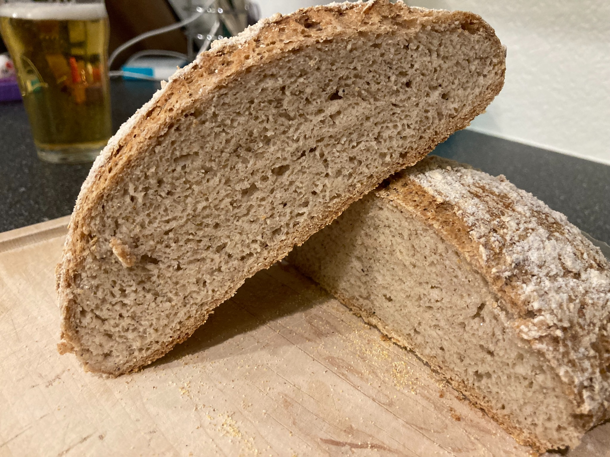

GF Bread Recipe
- 8g active dry yeast
- 20g granulated sugar
- 405g warm water
- 20g psyllium husk
- 65g buckwheat flour OR 65g sorghum flour
- 255g King Arthur measure for measure
- 10g sea salt
- 12 apple cider vinegar
Simple gluten-free baking
A reliable gluten-free loaf built around King Arthur Measure for Measure flour, psyllium husk, and a small amount of buckwheat or sorghum flour.
Jump to recipeFinding a good gluten-free bread recipe can be frustrating. Many recipes ask for a laborious specialty flour blend, a long list of hard-to-find ingredients, or a fussy process that makes the whole project feel more like a chemistry experiment than a loaf of bread.
This version is intentionally no-fuss. It uses King Arthur Measure for Measure flour as the base, then adds only buckwheat flour or sorghum flour for better flavor and structure. Psyllium husk gives the dough the stretch and body that gluten-free bread usually lacks, while the Dutch oven helps create steam for a better crust.
The result is a rustic, practical loaf: simple ingredients, a manageable process, and a gluten-free bread that actually feels worth making again.

This page has been opened 0 times in this browser.
For a real public visitor counter on GitHub Pages, add a lightweight privacy-friendly analytics tool such as GoatCounter or Plausible. GitHub itself provides repository traffic analytics, but not usually a visible page counter for visitors.